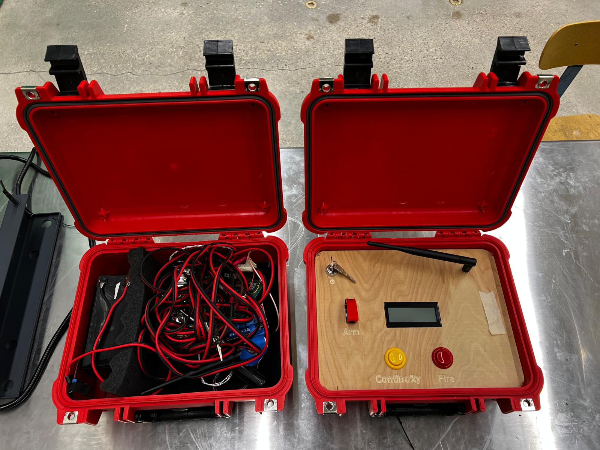

The launch controller was a necessary part of the club. We used it in all aspects, including from our Estes rocket launches all the way up to our full-scale rocket launches. The current ones that the club had were not functional or had many issues, including portability or reliability. A club member and I sought to solve this by making our own lightweight, wireless, portable version of the launch controller.
Launch controller consisted of two separate boxes: a remote and a base station. The remote station was near the rocket and would connect to the igniter and send the charge that would launch the motor, as well as check continuity. The base station was with the operator and had a key to turn on, an arming switch, a continuity button to check the igniter continuity, as well as the launch button itself. The launch controller worked up to 500 m, which was necessary for the size of rocket motors that we were using.